Хоча зараз існує навіть додаток, який забороняє відволікатися на телефон, найбільше користі вони можуть принести в наші щоденні заняття фітнесом — від віртуального тренера до підручника з медитації.
Світ велосипедного спорту не виключення. Насправді смартфон може бути одним із найбільш корисних інструментів для велосипедиста: карти й путівники, тренувальні та дієтологічні курси — усе це на твоєму екрані.
Ось кілька додатків для ефективного використання часу на двох колесах.
Кращі велододатки для навігації
1. Komoot

- Для чого:
- упевнена навігація
- Вартість:
- безкоштовно
Звичайно, Google Maps — це потужний інструмент навігації, але іноді вони можуть бути трохи… повільні. Ба більше, покладаючись лише на них, ти можеш легко заблукати особливо на двох колесах серед міських вулиць.
Komoot не має жодної з цих проблем. У партнерстві з Garmin програма використовує базу даних OpenStreetMap з відкритим кодом, для планування маршруту в дорозі.
Ти зможеш побудувати MTB, дорожні та навіть гравійні маршрути, які завжди пропонують сприятливий саме для велосипедиста шлях. До того ж якщо заздалегідь встановити початкову й кінцеву точки, додаток навіть запропонує декілька маршрутів і вкаже їх рівень складності. Інакше кажучи, він знає, наскільки простим шлях буде для тебе.
2. Maps.Me

- Для чого:
- офлайн-мапи цілих країн
- Вартість:
- безкоштовно
Так, ти все правильно прочитав. Maps.Me дозволяє завантажувати картографічні дані для цілих країн. Хочеш знайти найкращі маршрути в Уельсі? No drama. Як щодо Іспанії? Si, de nada. Франція? Ну, ти зрозумів ідею.
Але найкраще, найреволюційніше в програмі те, що нею можна користуватися в режимі офлайн (якщо завантажити дані заздалегідь). Тож якщо ти не маєш доступу до 4G або не хочеш платити в роумінгу, просто завантаж ділянку мапи для міста чи країни, у якій перебуваєш, і зможеш знайти дорогу навіть у місці далекому від цивілізації.
3. Ride With GPS

- Для чого:
- планування наступної пригоди
- Вартість:
- безкоштовно, є платні функції, включаючи вдосконалене редагування маршрутів
Частина задоволення від поїздки на велосипеді — це планування нового маршруту. На щастя, саме це дозволяє Ride With GPS. Завантаж його, і ти зможеш спланувати свою наступну пригоду надзвичайно детально, записати поїздку в процесі та навіть поділитися своїм місцезнаходженням з друзями в режимі реального часу.
Додаток дозволяє масштабувати найбільші підйоми на шляху, допомагаючи тобі заздалегідь підготуватися до них. Найкраще, що він навіть може бути використаний для навігації в режимі офлайн — корисна функція, якщо 4G залишився далеко за спиною.
4. TrailForks
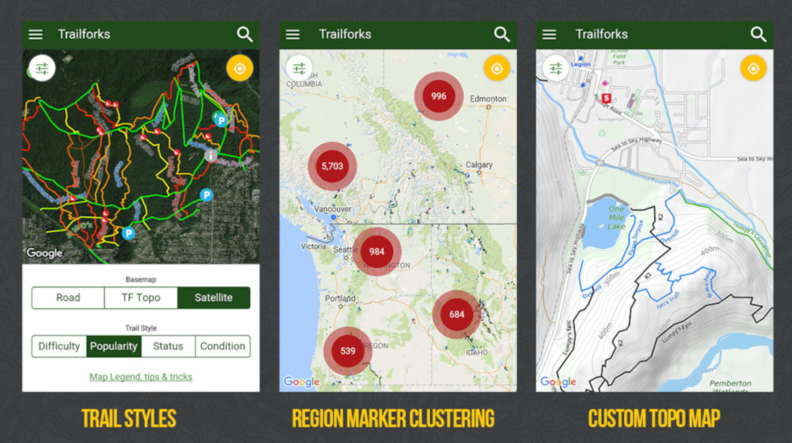- Для чого:
- навігація маловідомими маршрутами
- Вартість:
- безкоштовно
Кожен з нас хоч раз у житті опинявся на роздоріжжі та не знав, як повернутися до цивілізації. Наступного разу, перед поїздкою невідомим маршрутом, не забудь завантажити TrailForks, перш ніж виходити з дому: він допоможе заощадити пару годин поневірянь лісом чи схилами гори.
Спираючись на інформацію від інших велосипедистів, програма може похвалитися детальними картами більш ніж 161 000 маршрутів у всьому світі, геолокацією в режимі реального часу та інформацією про визначні місця. На випадок якщо щось піде не так, існує функція тривоги, яка передає твої точні GPS-координати й назву найближчого населеного пункту. Надважливо, якщо ти полюбляєш їздити сам.
5. ViewRanger
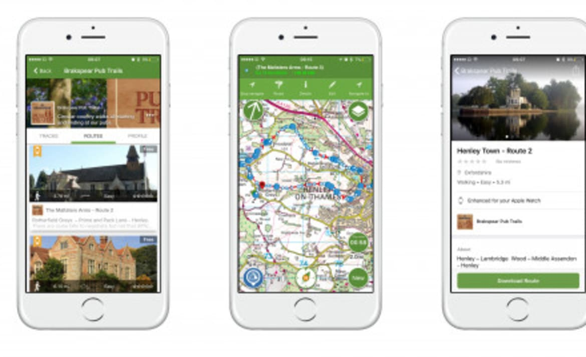- Для чого:
- дослідження нових шляхів
- Вартість:
- безкоштовно, додаткові функції від 200 грн
Традиційні карти на основі GPS, як правило, добре працюють на дорогах, але якщо ти з’їжджаєш із них, точність значно спадає, особливо в горах. ViewRanger спеціалізується на таких невідомих шляхах, надаючи всі дані, які тобі потрібні.
Безкоштовний пакет поставляється з мапою всієї планети на основі OpenCycle, але з платними функціями додаток стає ще кращим. Основні моменти включають детальні топографічні карти для більш ніж 20 країн, а також функцію VR Skyline, яка використовує твої GPS координати та камеру телефона, щоб вказати назву кожної гори, яка трапиться на шляху.
6. Cyclemeter
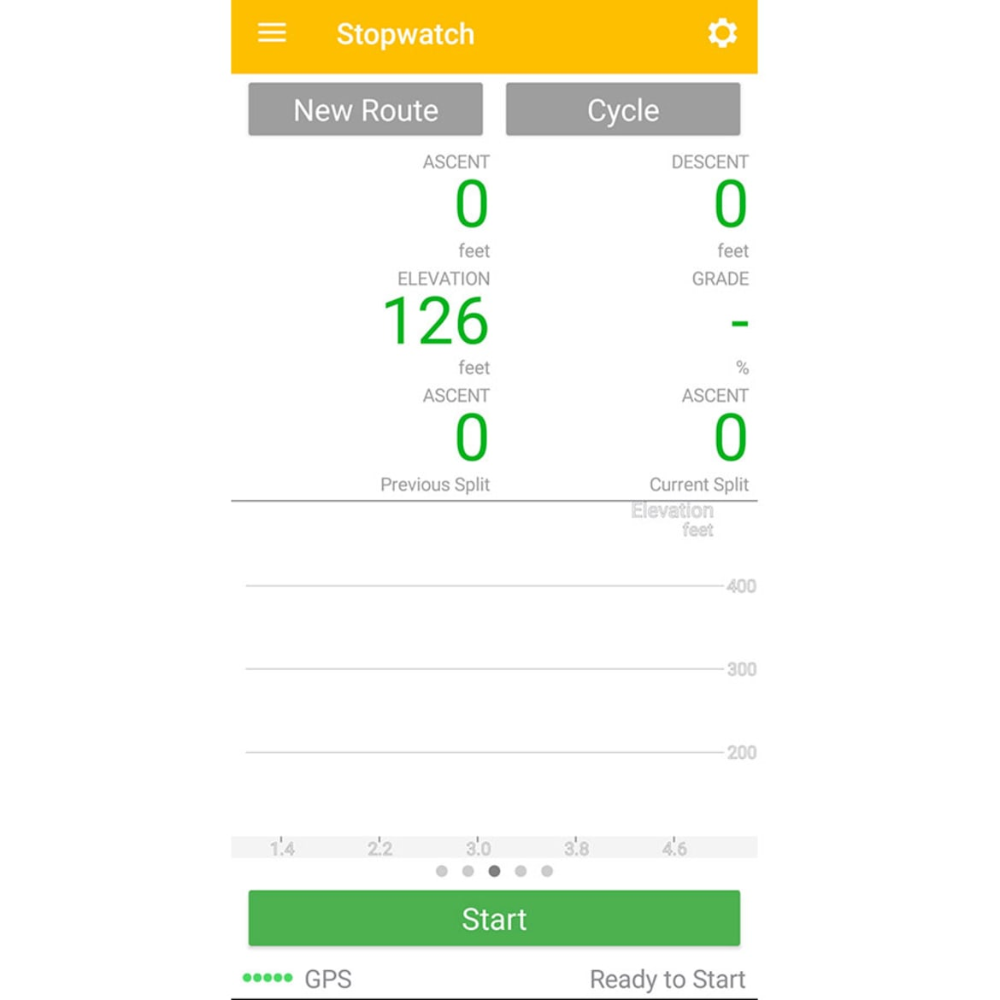- Для чого:
- перетворює телефон на власного тренера
- Вартість:
- безкоштовно
Рекламуючи себе як «найдосконаліший додаток для велосипедистів, що коли-небудь розроблявся для мобільного пристрою», Cyclemeter перетворює твій смартфон на власний вбудований фітнес-комп'ютер. Ти не тільки матимеш доступ до інтервальних планів тренувань, карт, графіків та оголошень, але й докладний аналіз результатів поїздки.
Cyclemeter зручний тим, що не потрібно переходити на зовнішній вебсайт, щоб зберегти ці дані. Звичайно, можна розміщувати результати на Strava чи Facebook, але навіть якщо ти не поділишся ними, усі дані залишаються на телефоні, і до них можна буде повернутися та порівняти.
7. Endur8
- Для чого:
- поради з харчування
- Вартість:
- безкоштовно для «загальних користувачів» або 280 грн на квартал для розробки персональних планів
Незалежно від того, наскільки довгим буде твій шлях, добре мати із собою достатньо води та їжі. Використовуй Endur8: додаток дає поради щодо харчування, а також нагадує, що час підкріпитися під час поїздки.
Endur8 можна використовувати під час велотренувань (потрібно закласти маршрут заздалегідь) або навіть під час великих заїздів на змаганнях (додаток одразу має вбудовані маршрути).
8. Zwift
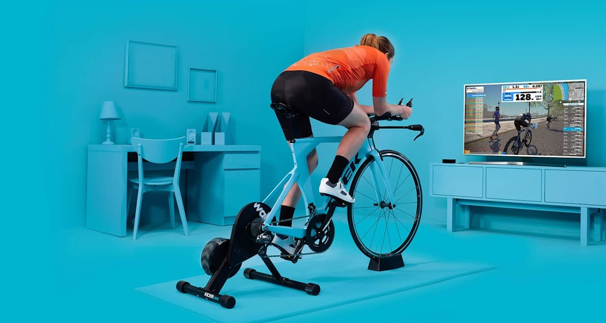- Для чого:
- повертає задоволення від занять у приміщенні
- Вартість:
- 420 грн на місяць
Намотувати кілометри на велотренажері страшенно одноманітно. Але що робити, коли ти звик до безпеки свого будинку?
Завантаж Zwift і поринь у детальний та інтерактивний віртуальний світ. Підключись до матриці, і ти зможеш у режимі реального часу змагатись зі спортсменами з усього світу (хоча, крім додатку, потрібен також велотренажер, що підключається до інтернету та монітор перед ним). Додаток має вбудовані тренування, які допоможуть стати найкращим у своєму віртуальному клубі.
9. Bike Gear Calculator
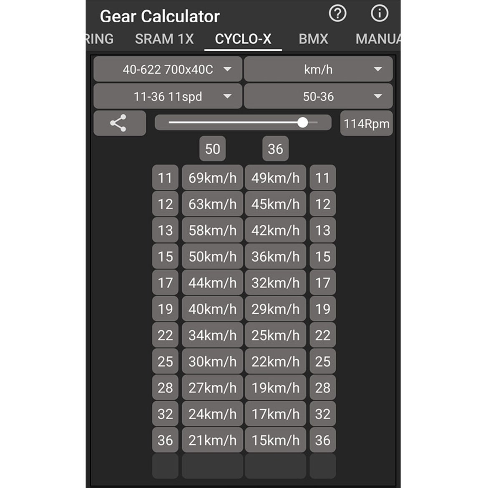- Для чого:
- оптимізація продуктивності
- Вартість:
- безкоштовно
Цей додаток допомагає правильно розрахувати передачі, щоб їх налаштування було максимально ефективним. Bike Gear Calculator дозволяє ввесті всі дані: від розміру шини до частоти передач — перш ніж повернути відповідні дані про продуктивність велосипеда.
Це не тільки корисно у разі заміни деталей, але також дозволяє налаштувати велосипед до тренування в конкретний день — поїздка на витривалість, керування на складній місцевості чи тренування на велотреку.
10. My Campy
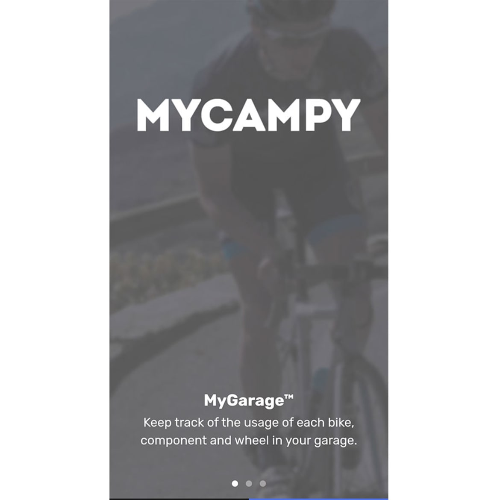- Для чого:
- відслідковує параметри руху й велосипеда
- Вартість:
- безкоштовно
My Campy, розроблений італійцями для компанії Campagnolo, відслідковує всі параметри руху велосипеда. Він вимірює фізичні аспекти їзди та її продуктивність. Це буквально поєднання телефона та велосипеда. Ти не тільки дізнаєшся, коли треба відпочити або перемкнути передачу, але й у режимі реального часу отримуєш дані про фізичний стан велосипеда, навіть до таких подробиць, як: стан гальм і необхідність змастити ланцюг.
Більше інформації тут11. Strava
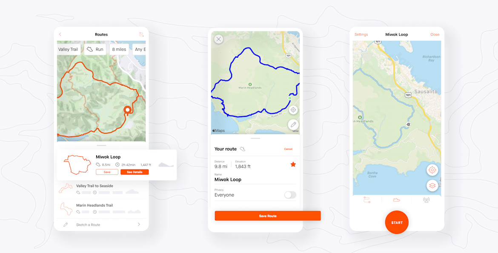- Для чого:
- аналіз кожної поїздки
- Вартість:
- безкоштовно, 165 грн на місяць для преміум-членства
Що можна сказати про Strava такого, що ми не згадували вище? У США додаток став синонімом дорожнього велосипедного руху, оскільки мільйони його членів планують і відстежують свої поїздки щодня в цій соціальній мережі для велосипедистів.
Програма пропонує все, що середньостатистичий велосипедист міг би бажати: дані про свою продуктивність (відстань, швидкість і навіть частота серцевих скорочень, якщо є відповідний датчик), а також членство в клубі, де ти можеш проаналізувати свою статистику в динаміці або відносно інших велосипедистів. Додаток і спільнота, яка його використовує, не тільки мотивує тренуватися, але й порадить, як зробити це краще.
12. Wahoo Fitness
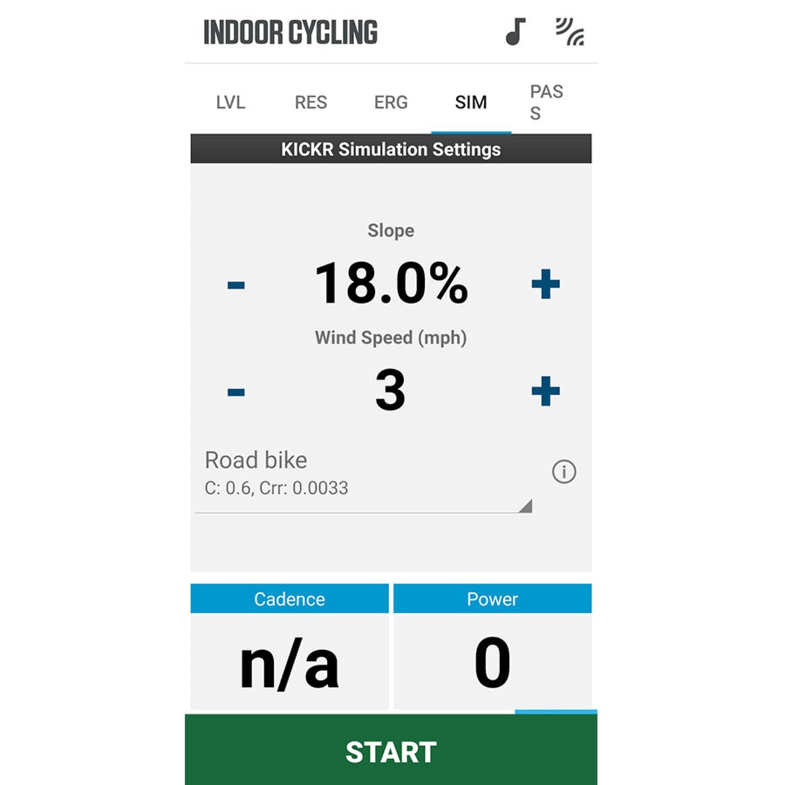- Для чого:
- збереження даних
- Вартість:
- безкоштовно
Якщо ти хочеш просто зібрати дані про ефективність своєї поїздки, тобі підійде Wahoo Fitness. Портал додатків бренда фітнес-аксесуарів містить не менше восьми налаштованих розділів даних, що охоплюють усе: від швидкості до серцевого ритму та спалювання калорій. Крім того, додаток легко поєднується з датчиками швидкості та моніторингом частоти серцевих скорочень і робить до смішного простим введення цих даних на таких платформах, як: Strava та MyFitnessPal — допомагаючи зберігати точну інформацію в одному місці.
13. Fill That Hole
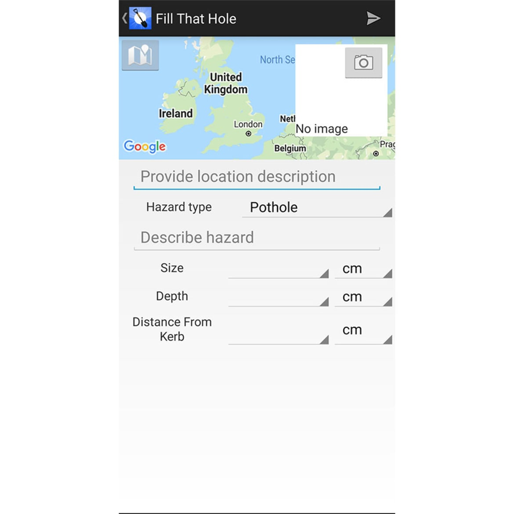- Для чого:
- їзда велосипедом без перепаду висот
- Вартість:
- безкоштовно
Спробуй проїхатися вулицями рідного міста, і ти точно зрозумієш, для чого потрібен цей додаток. Під час таких прогулянок хочеться, щоб місцевість була якомога рівною й гладкою. Ось тут і знадобиться Fill That Hole.
Додаток, створений компанією Cycling UK, дозволяє завантажити фотографію вибоїни, яка заважає спокійній поїздці, а потім надсилає її до відповідних місцевих органів. Хоча немає жодної гарантії, що вони насправді щось зроблять, та все ж приємно відчувати, що ти намагаєшся зробити дороги безпечнішими для велосипедистів.
14. Haynes Bike Repair Guide
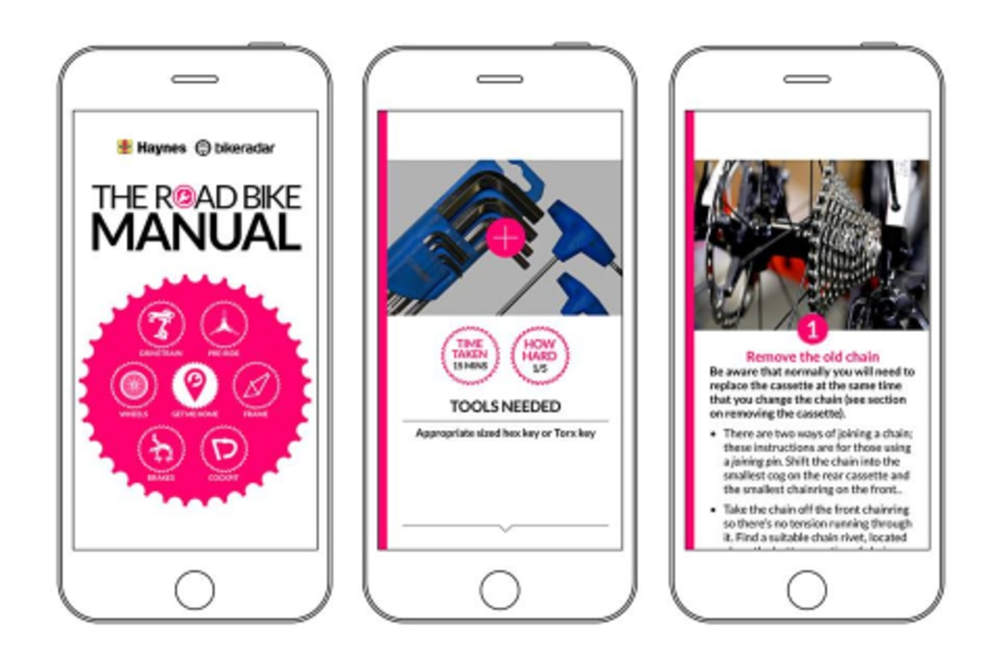- Для чого:
- легке обслуговування велосипедів
- Вартість:
- 100 грн
Як найвідоміший видавець книг з ремонту мотоциклів і велосипедів, Haynes у 2020 році випустив додаток-посібник з велоремонту. Додаток містить усе необхідне для виконання найпоширеніших завдань з технічного обслуговування, включаючи життєво-необхідну навичку заміни проколотої камери.
Не дуже розбираєшся в техніці? Не хвилюйся. Додаток включає покрокові відеоуроки з ремонту велосипеда, а найкраще, що він оновлюється свіжим вмістом щомісяця.
15. Red Bull TV
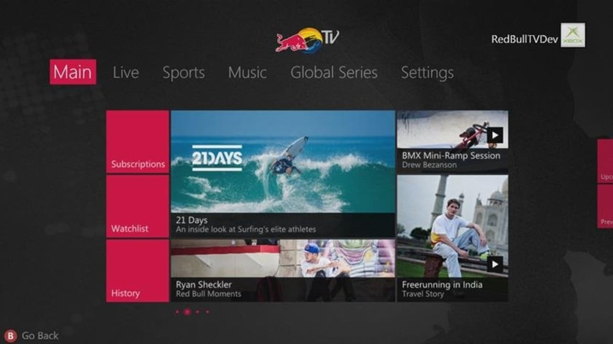- Для чого:
- відпочинок для велолюбителів
- Вартість:
- безкоштовно
Хоча це хороший додаток не тільки для велосипедистів, на Red Bull TV можна знайти документальні фільми й прямі трансляції велозмагань.
Окрім відео з Кубка
світу
UCI та Crankworx, можна подивитися записи з архіву Red Bull подій таких, як:
Rampage і Hardline.
На Red Bull TV на тебе чекає безліч серіалів та
ексклюзивні повнометражні
проєкти. А
найкраще, що це абсолютно безкоштовно.